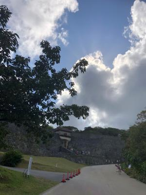
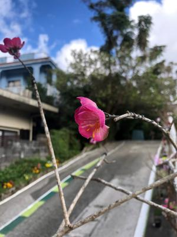
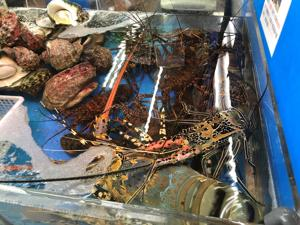

うるがいの話 ある日
最新: 退職手当の源泉徴収票・特別徴収票【うるがいの話 ある日】とは 一日だけのプログです
『うるがいの話』の最新一日だけのプログで、通信料が少なく経済的だ。カニの画像をクリックすると全ての日付が載る『うるがいの話』サイトを表示します
|
|
【うるがいの話】 うるがい(ｳﾙｶﾞｲ urugai)とは、『もずくがに』の名前でとても大きくなります。 |
|---|---|
|
|
【カミマヤーの話】 猫のことを方言でマヤーといいます。カミマヤー（kamimayaa）とは、神の猫のことです。 |
|
【たながぁの音楽】 たながぁ（ﾀﾅｶﾞｰ tanagaa）とは手長えびのことで、何種類かあり大きいのは車 エビぐらいになります。 |

|
【ぶながぁの話】 ぶながぁ(ﾌﾞﾅｶﾞｰ bunagaa)とは、赤い髪の毛、赤い身体、そして身長は１ｍ２０ｃｍ ぐらい、川の蟹を食べているの目撃された。場所は沖縄県国頭郡大宜味村のと ある村僕の隣近所に住んでいる爺さんから、聞いた話です。 |
|
|
【ギーマの話】 ギーマ(giima)とは、山原の里山に咲くスズランに似た、 花を付けます。実は食べられます、 気が付くと口の周りが紫になっています。 |
2023年02月13日 (月）退職手当の源泉徴収票・特別徴収票
17:52
  
確定拠出型年金の請求（の封筒を出した。台湾有事などを考慮するとこの先、拠
出金の評価額が上がるとは思えず、恐らく元本を割る確率が大きいと判断。請
求の資料を送ってもらい、説明書に基づいて作成した。けっ！、かなり不親切
な様式、デザインが最低、記入枠やマイナンバーカードの写しなどの貼り付け
枠が、小さい！。電話で確認するのも癪なので適当にやる。それにしても、直
前の『退職手当の源泉徴収票・特別徴収票』が必要なのは分かるが、１９年前
に遡って前職場の『退職手当の源泉徴収票・特別徴収票』がいるとは・・・（
持っていたが）、さらに実際に退職金が振り込まれた日を通帳で確認せ、とま
で書いてある。かなり、憤りを感じながらだが、滞りなく請求のための資料を
整え、郵便局から書留で管理会社へ送る。でも、退職金でているからラッキー
な人生だったよと。
１７時４５分 ビットコインの総資産 ￥８、３３６（↑２３）